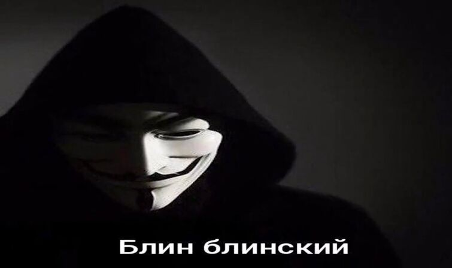
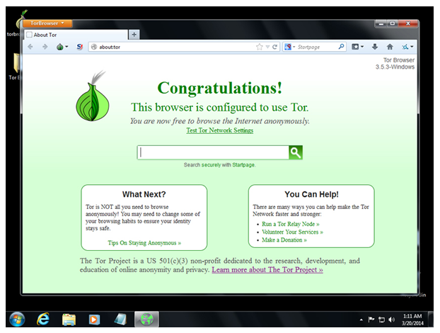
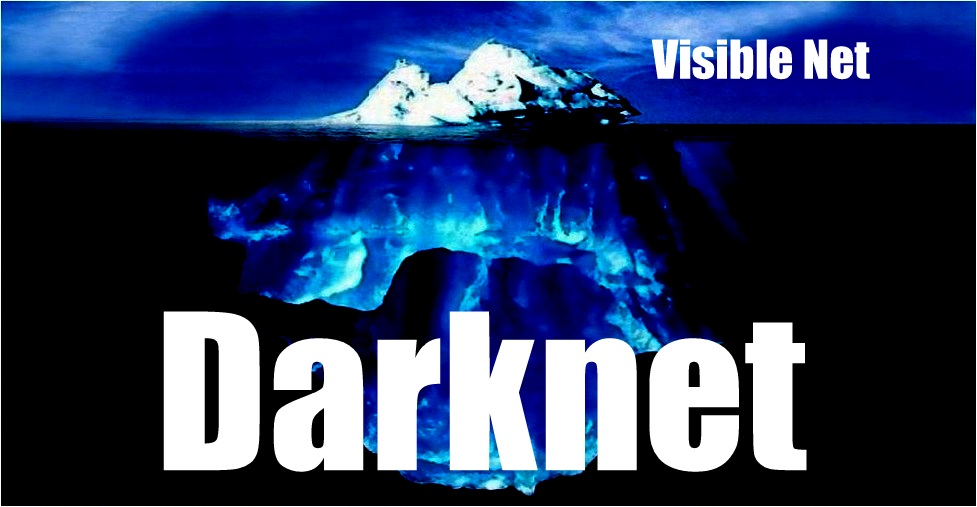
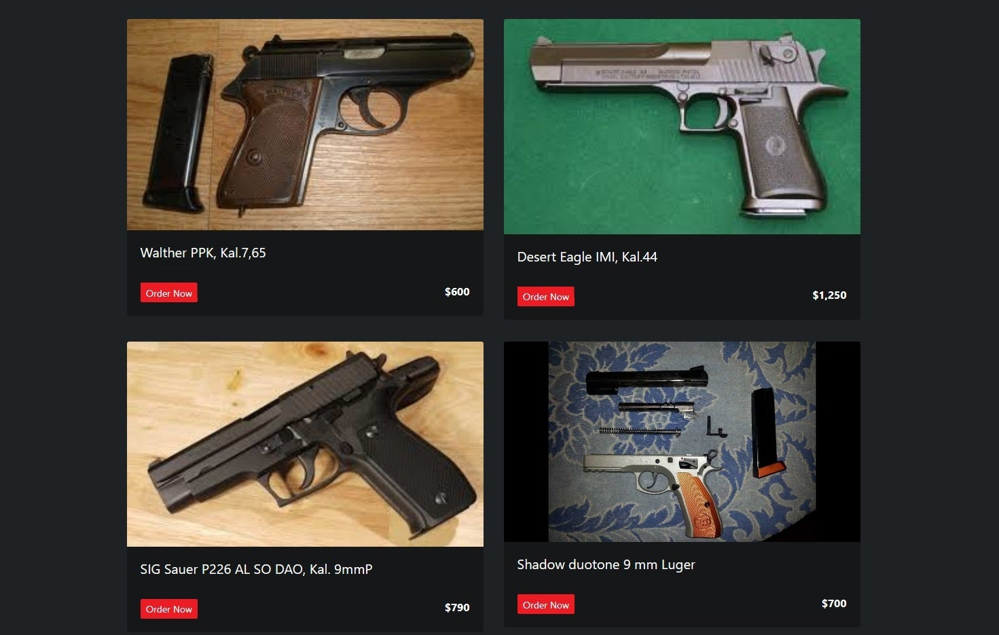
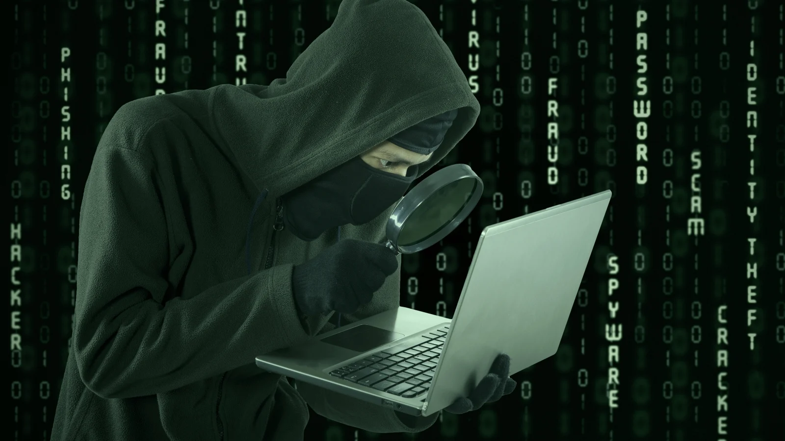

МИФЫ ДАРКНЕТА (DARK NET). ТОП-10 (РАЗВЕНЧАНИЕ)
Мифы даркнета. Все слышали о существовании темного интернета и удивительных и страшных вещах, которые там творятся. Представляем развенчание топ мифов.
# 1 – Дарквеб (Dark Web) – разновидность Дипвеба (Deep Web)
Дипвеб (Deep Web, Глубинная сеть) – это классификация веб-страниц, которые не доступны широкой общественности. Вообще говоря, Дипвеб (Deep Web) – это о секретности. Вы можете читать свою электронную почту в Интернете, но эти страницы недоступны для всех. То же самое касается и Вашего банковского счета. Отличным примером дипвеба (Deep Web) является внутренняя сеть любой компании. Эта сеть, вероятно, имеет данные работников и финансовые данные, которые не доступны для всех. Другими примерами дипвеба (Deep Web) являются веб-форумы, которые требуют входа в систему. Это только сайты, которые не доступны никому.
Дарквеб (Темная сеть, Dark Web, или даркнет (Dark Net)) – это классификация веб-страниц, обслуживаемых через программное обеспечение анонимности. Tor Brower позволяет просматривать веб-страницы анонимно. Другая сторона этого заключается в анонимном размещении содержания. Скрытые услуги Tor являются способом как сделать это. Таким образом можно размещать сайты анонимно.
Это два разных класса веб-сайтов. Дарквеб (Dark Web) или Даркнет (Dark Net) не является более глубоким уровнем для дипвеба (Deep Web). На самом деле, некоторые сайты могут быть классифицированы как глубинный дарквеб (Deep Dark Web). Примером может служить веб-форум, который требует членства для доступа, обслуживаемый браузером Tor.
# 2 – Дарквеб (Dark Web) больше, чем обычный Интернет
Это один из самых популярных мифов дарквеба. Так как люди часто путают Даркнет (Dark Net) и дипвеб (Deep Web), о чем мы уже писали. Это не одно и то же. Они даже не очень связаны друг с другом. Дипвеб является частью обычного Интернета. Даркнет (Dark Net) на самом деле маленький. Зачастую существуют десятки тысяч темных сайтов. Это непостижимо мало по сравнению с нормальной Интернет паутиной. Нормальный интенет имеет более миллиарда сайтов. Дипвеб (Deep Web) действительно большой. Он включает в себя все содержимое в Интернете, которое не является общедоступным. Например, он включает в себя каждую электронную почту на Gmail, Hotmail, Yahoo и др. Дипвеб (Deep Web), наверное, на порядок больше, чем обычный или поверхностный Интернет.
# 3 – Даркнет (Dark Net) контролируется правительством
В Даркнете (Dark Net) преобладают скрытые услуги Tor. Принципы сети Tor разработанные в 90-х годах Морской исследовательской лабораторией США. Кроме того, правительство США давало деньги на проект Тор. Это привело к тому, что сторонники теории заговора считают, что США контролируют проект. Эти люди не признают, что его код является открытым кодом. К этому времени исследователи могли бы найти любые бэкдоры. Институты правительства США помогают Тор, поскольку они также хотят иметь инструмент для анонимных сообщений.
# 4 – Даркнет (Dark Net) труднодоступен
Нет. Вы можете скачать Tor Browser и запускать его так же, как и любой другой браузер. Это очень просто, чтобы начать работу. После установки браузера вам понадобится всего несколько onion адресов.
# 5 – Нелегальный доступ к темной паутине
В США вполне законно иметь доступ к Даркнету (Dark Net) . Это так же законно, как и доступ к обычной сети. То, что вы делаете в обоих видах сайтов может быть незаконным. Попытки купить нелегальные наркотики, конечно, являются незаконными. Не имеет значения, если вы делаете это на дарквебе, или в нормальном Интернете, или на улице.
# 6 – Есть секретные слои темной паутины
Большинство темных сайтов доступны любому пользователю с браузером Tor. Единственным дополнительным уровнем для дарквеба будут сайты, которые можно считать дипвеб (Deep Web). Примером может быть веб-форум с доступом только для участников, который размещается через скрытую службу Tor. Теории про квантовой дипвеб (Deep Web), Marianas Web, или Charter Web – это фейки. Они были составлены 4chan троллями. Эта теория о айсберге – полная ерунда.
# 7 – Вам нужна “закрытая защищенная система” для доступа к “реальной” темной сети
“Закрытая защищенная система” является бессмысленным термином. Это немного напоминает, когда здоровые люди говорят о «токсинах». Они никогда не дают им определение, поэтому невозможно развенчать этот миф. К счастью для нас, они также не дают абсолютно никаких доказательств, подтверждающих свои утверждения. Я могу сказать с той же уверенностью, что мой тостер – это точка доступа “реальной” темной сети. Это не что иное, как теория заговора, что распространяется с помощью невежественных.
# 8 – Вы можете купить все в Даркнете (Dark Net)
Говоря о мифах даркнета (Dark Net), нельзя не упомянуть это распространенное утверждение. Удачи вам. Реальный рынок – Silk Road – был закрыт с 2013 года. Многие пытались заменить его, но никому не удалось. Почти каждый человек, который утверждает, что продает нелегальные товары и услуги на этих сайтах, является мошенником или просто врет. Сайты-копираторы часто заполоняют свои рынки фальшивыми сообщениями, чтобы они выглядели более настоящими. Я не скажу, что это невозможно, но есть лучшие способы нарушить закон. Наркотики и секс покупаются на улице каждый день. Пистолеты можно легко покупать без надобности выставлять их на всеобщее обозрение.
# 9 – Вся киберпреступность находится в темной паутине
Большинство киберпреступлений происходит в регулярной сети. Киберпреступность случается и в дарквебе, но в нормальном Интернете преступлений совершается гораздо больше. Даркнет (Dark Net) часто используется преступниками для связи. Но, фактические преступления, такие как фишинговые сайты, выполняются на поверхности сети. Преступления совершаются там, где можно встретить много жертв. А все потенциальные жертвы пользуются обычным интернетом.
# 10 – Даркнет (Dark Net) используется только для преступнных целей
Даркнет (Dark Net) используется многими типами людей. Есть преступники на дарквебе. Есть также политические диссиденты, защитники конфиденциальности и другие. Крупные организации, такие как ProPublica, Facebooks и DuckDuckGo, имеют веб-сайты в дарквебе (Dark Web).
Интернет изменил нашу жизнь множеством положительных способов, но он имеет темную сторону – интернет безопасность становится вопросом №1. Неприкосновенность личной жизни утрачена, оставляя вас в уязвимыми к действиям мошенников, преступных компаний и службы безопасности. Но есть шаги, которые можно сделать, чтобы ограничить вашу уязвимость.